Onga
Onga · Fukuoka
Onga
Highlighted on the Fukuoka map.
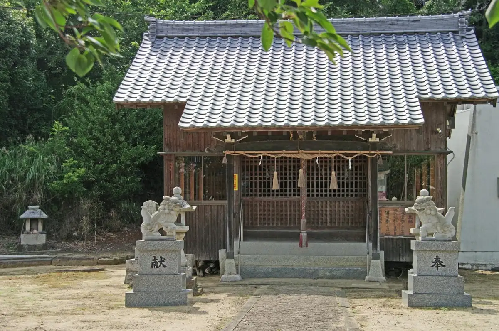
Dining
がんこもんラーメン
Gankomon Raamen
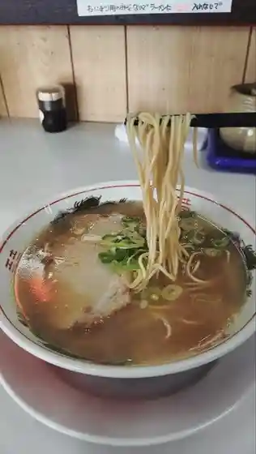
洋食 中村家
Youshoku Nakamura Ie
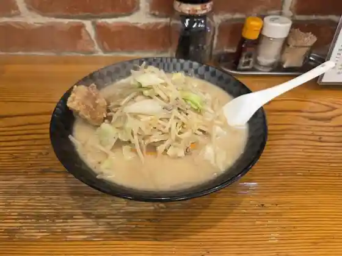
てるのちゃんぽん亭
Terunochanpon Tei
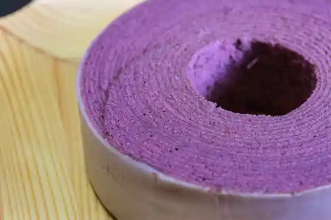
アラペイザンヌ 遠賀店
Arapeizannu Onga Mise
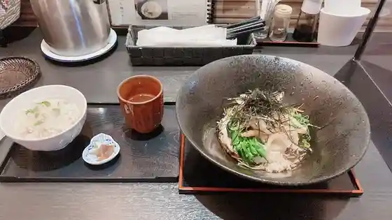
糀
Kouji
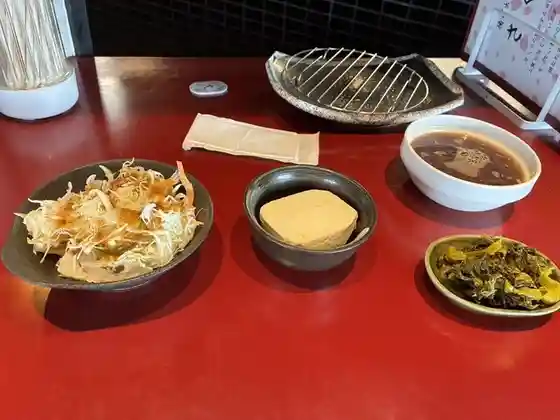
さくら
Sakura
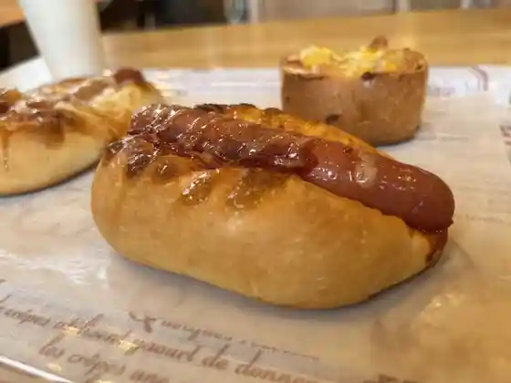
ルーネ ラパン
Ruune Rapan
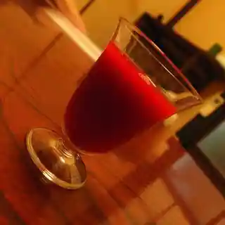
森のおはな
Mori Noohana
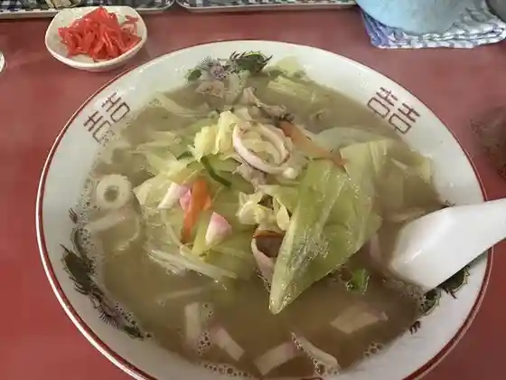
おんがラーメン
Onga Raamen
風樂
Kaze Raku
マキマキ屋 遠賀店
Makimaki Ya Onga Mise
中華バル 武遊
Chuuka Baru Buyuu
つるりんどう
Tsururindou
自然薯 智清庵
Shizen Sho Satoru Seian
ラーメン勝龍軒
Raamen Shouryuu Ken
Ｂｉｓｔｒｏ Ｒ
Bistro R
繁升
Han Masu
クイーンボアーズ
Kuiinboaazu
mama sweets
mama sweets
ぴーぷる
Piipuru
焼肉本舗
Yakiniku Honpo
酒処 はな田
Sake Tokoro Hana Ta
MASAJIRO BURGER 遠賀本店
MASAJIRO BURGER
博多地どり 市右ヱ門
Hakata Chi Dori Shi Migi E Mon
あまねや
Amaneya
レトロ門司港ラーメン 大平山 遠賀店
Retoro Mojikou Raamen Oohira Yama Onga Mise
豆工房 遠賀えし
Mame Koubou Onga Eshi
北野坂 kitanozakacoffee
kitanozakacoffee
ハナオ コーヒー
Hanao Koohii
河口屋
Kakou Ya
TAJ MAHAL 遠賀店
TAJ MAHAL
チサンカントリークラブ 遠賀
Chisankantoriikurabu Onga
ジモカフェ & アトリエ木布ん
Jimokafe & Atorie Ki Nuno N
カレースタジオ 宮の前
Kareesutajio Miya No Mae
なが田屋 トライアル遠賀店
Naga Taya Toraiaru Onga Mise
焼鳥ジブリン
Yakitori Jiburin
たこ焼き幸
Tako Yaki Sachi
鉄板餃子の池田屋 遠賀店
Teppan Gyouza No Ikeda Ya Onga Mise
KANAMUSUBI
KANAMUSUBI
みらいテラスカフェ
Mirai Terasukafe
cafe bar Toi
cafe bar Toi
ドッグ カフェ ベベ
Doggu Kafe Bebe
つくしの子
Tsukushino Ko
ガトー・スール
ガトー・スール
にゃんむすび
Nyanmusubi
ごはん家 ふじや
Gohan Ie Fujiya
とらや
Toraya
お食事処 おふくろ食堂
O Shokuji Tokoro Ofukuro Shokudo
珈琲舎 ブラッサム
Koohii Sha Burassamu
さぬき亭
Sanuki Tei
牛肉のふくなが
Gyuuniku Nofukunaga
ドラム館
Doramu Kan
あしや釜本舗 おんが支店
Ashiya Kamamoto Ho Onga Shiten
もつラーメン 銀
Motsu Raamen Gin
キッチンひなた
Kitchin Hinata
Cafe ほのぼの
Cafe
旭軒 浅木店
Asahi Ken Asagi Mise
ジョイフル 北遠賀店
Joifuru Kita Onga Mise
ミスタードーナツ ゆめタウン遠賀店
Misutaadoonatsu Yume Taun Onga Mise
マクドナルド 遠賀ゆめタウン店
Makudonarudo Onga Yume Taun Mise
モスバーガー 福岡遠賀店
Mosubaagaa Fukuoka Onga Mise
東筑軒 遠賀工場売店
Touchiku Ken Onga Koujou Baiten
唐十 ゆめタウン遠賀店
Tou Juu Yume Taun Onga Mise
焼鳥 井上商店
Yakitori Inoue Shouten
柚ず 遠賀店
Yuzu Zu Onga Mise
うどんふじや
Udonfujiya
あごはち
Agohachi
蕎麦カフェ&ギャラリー むらかみ
Soba Kafe & Gyararii Murakami
ひまわりキッチン
Himawari Kitchin
鮨処仲むら
Sushi Tokoro Naka Mura
マーフィーズ カフェ
Maafiizu Kafe
ひよ子本舗吉野堂 ゆめタウン遠賀店
Hiyo Ko Honpo Yoshino Dou Yume Taun Onga Mise
とり真
Tori Makoto
ゆめのパンやさん 遠賀店
Yumeno Pan Yasan Onga Mise
焼菓子工房 Orange
Orange
やぶれかぶれ
Yaburekabure
ほづき
Hozuki
よしや食堂
Yoshiya Shokudo
のり燻本舗andB
andB
麦坊主
Mugi Bouzu
やさい畑 おんが店
Yasai Hatake Onga Mise
源蛸 遠賀店
Gen Tako Onga Mise
ありがた屋 遠賀店
Arigata Ya Onga Mise
きむらくん
Kimurakun
肉のさつま屋 今古賀店
Niku Nosatsuma Ya Kinko Ga Mise
海宝寿し
Kaihou Hisashi Shi
地どりあづま
Chi Doriazuma
まちのとみちゃん弁当
Machinotomichan Bentou
瑠璃ズキッチン 遠賀自動車学校店
Ruri Zukitchin Onga Jidoushagakkou Mise
食房えん
Shoku Bou En
アニバーサリー カフェ
Anibaasarii Kafe
アヤ
Aya
焼肉やす
Yakiniku Yasu
ファーストフードはちハニー
Faasutofuudo Hachi Hanii
たこ九
Tako Kyuu
えがお食堂
Egao Shokudo
焼鳥太閤
Yakitori Taikou
Happiness
Happiness
キッチン イエローママ
Kitchin Ieroomama
遠賀うどん
Onga Udon
天一食堂
Ten'ichi Shokudo
達磨
Daruma
おんがうどん 日替弁当
Ongaudon Nichi Kae Bentou
やすらぎのさと
Yasuraginosato
遠賀屋台
Onga Yatai
居酒屋 蓮
Izakaya Hasu
LAWSON 遠賀山田峠店
LAWSON
焼とり居酒屋 ぴーぷる
Yaki Tori Izakaya Piipuru
おんがのかき小屋
Onganokaki Koya
何処
Doko
からあげ666
Karaage 666
Maguro no Marujin
Maguro no Marujin
Yoshoku Nakamuraya
Yoshoku Nakamuraya
Ongagawa Amatoya
Ongagawa Amatoya
Coffee Shop Kitanozaka
Coffee Shop Kitanozaka
Queen Boise
Queen Boise
Joyfull
Joyfull
Ramen Katsuryuken
Ramen Katsuryuken
Creative Cuisine Haruka
Creative Cuisine Haruka
Ongachoi Flea Tavern Hiro Chan
Ongachoi Flea Tavern Hiro Chan
Country Heart
Country Heart
Tako Ichiban Yume Town Onga
Tako Ichiban Yume Town Onga
Karaoke Poodle
Karaoke Poodle
Arinko Freshly Baked Bread
Arinko Freshly Baked Bread
Dog Cafe Bebe
Dog Cafe Bebe
Murphy s Cafe
Murphy s Cafe
Thank You Curry Yume Town Onga
Thank You Curry Yume Town Onga
McDonald s Onga Yume Town
McDonald s Onga Yume Town
Mister Donut Yumetaun Onga
Mister Donut Yumetaun Onga
Mos Burger Fukuokaonga
Mos Burger Fukuokaonga
Sakaeya Onga
Sakaeya Onga
Yoshihisa
Yoshihisa
Karaoke Shizuka
Karaoke Shizuka
Karaoke Chao
Karaoke Chao
Karaoke Ichiban
Karaoke Ichiban
Karaoke Snack Daiya
Karaoke Snack Daiya
Fureai No Sato Center Ashi
Fureai No Sato Center Ashi
Ganihami Ashiya Main Store
Ganihami Ashiya Main Store
Saranoki
Saranoki
Pipuru
Pipuru
Bird Flower Onga
Bird Flower Onga
Tori Shin
Tori Shin
Forum
Forum
Karaoke Kayo
Karaoke Kayo
Sakana Club
Sakana Club
Bukichi
Bukichi
Zen of the Sum Shigerumasu
Zen of the Sum Shigerumasu
Buyu Chinese Baru
Buyu Chinese Baru
Mansaku
Mansaku
Miya Chan
Miya Chan
Izakaya Nonoka
Izakaya Nonoka
Pipuru
Pipuru
Yuzu Onga
Yuzu Onga
Okonomiyaki Hoku Hoku
Okonomiyaki Hoku Hoku
Fukada Eel Restaurant
Fukada Eel Restaurant
Jidori Azuma
Jidori Azuma
Cafe Live Rit
Cafe Live Rit
Asagiya
Asagiya
Japanese Restaurant Dining Nagomi
Japanese Restaurant Dining Nagomi
Bird
Bird
Ruri s Kitchen Onga Driving School
Ruri s Kitchen Onga Driving School
Snack Ya
Snack Ya
Kotopan
Kotopan
Hotto Motto Onga Imakoga
Hotto Motto Onga Imakoga
Sights
Onga Kawa Onsen Onga no Akayu
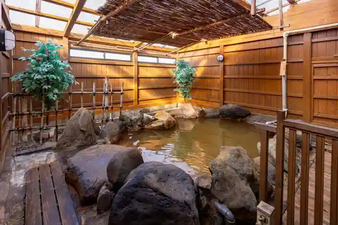
Onga Fureai Village
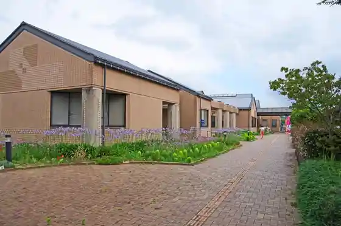
Onga Folk Museum
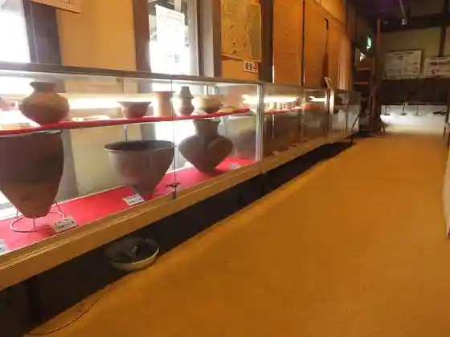
Ongamirai Terasu (Onga)
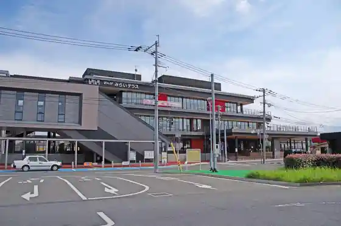
Ongakodomo Festival (Onga)
Sa Ga no Horyu Kai (Onga Town Hall Ura Nishikawa Kasenjiki)
Shimazu Minegaura Ike Park
Onga Kawa Onsen
Sumiyoshi Shrine (Onga Gun Wakamatsu)
Onga Sogo Sports Park
Kani Shoku Ike no Onibasu
Genki Market
Shimazu Maruyama Rekishi Nature Park